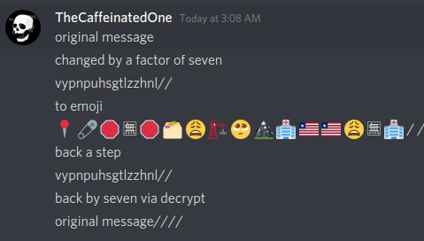

so the goal is to just set up very simple word scrambling but on multiple levels so it becomes complex. i made it in js because 1 i was bored 2 was learning about ssl so im planning on doing that. its also for future job reference for electron.js and js in general. this project was done over the course of 2 weekends and one day i had extra free time in between. so 5 days in total and smaller work windows(this was only worked on 5 hrs max per)
Docs/How To Use It
use encrypt to change the letter over in the alphabet by a number of your choice
use decrypt to move it back by the set number of choice
use discord emoji to change it to a discord emoji format :emoji_name:
use text to change it back from discord emojis
sending messages
its pretty simple. put your message in, make sure the receiving party knows the change variable, run it through encrypt(or decrypt it works both ways) and run it back through. you can put em through both of them to scramble it further, but its just gonna work as the balenced equation. like if i do encrypt 7 decrypt 3 encrypt 4 im just gonna end up with encrypt 8 or plus 8. so i wouldnt do that because it just makes it harder for you and not anyone trying to decrypt. in the future i should be able to set up a client secret style setup, where you can go into the code and edit so that the emoji factor has about 26 different keys, but you can see below for more context.

SSL Hand Shake
to do this in front of people without them knowing you both must confirm that you plan to use the code for no reason, this could be in a special phrase or not it really dosent matter, now provided that both have the decrypt and encrypt tool, you can send a first number to change it by in the emoji. then whover agrees sends another number written out (must be below 27) this must be scrambled by the first plaintext or both the first and emoji this step is optional but better for security. then scramble by this number for future. please note that this is not an entirely true ssl hand shake as the public key or in this case emojis is known by both parties, and therefore all parties with this tool. what can be done is have this used as a host tool, then i make another one without emoji decrypt and scrambler. which is sent to a part